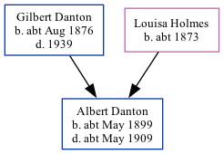

Albert Victor Danton cMay 1899 - c1909
[ Home ] | [ Calendar ] | [ Surnames Index ] | [ Family History ]The child of Gilbert Danton and Louisa HolmesAlbert Danton, the second cousin once-removed on the father's side of Nigel Horne, was born in Ramsgate, Kent, England c. May 18991,2,3,4 and baptized there at St Luke's Church on Jun 21, 1899. In 1901, he lived in St Lawrence, Thanet, Kent, England1.
He died c. May 1909 in West Ham, London, England4,5 and was buried in Newham, London, England on May 13, 1909.
Parents
- Gilbert Edmund was born c. Aug 1876
- Louisa Mary was born c. 1873
Citations
- 1901 England Census Online publication - Provo, UT, USA: The Generations Network, Inc., 2005.Original data - Census Returns of England and Wales, 1901. Kew, Surrey, England: The National Archives of the UK (TNA): Public Record Office (PRO), 1901. Data imaged from the National (Relation to Head of House: Visitor)
- England & Wales births 1837-2006 - Findmypast
- England & Wales, FreeBMD Birth Index, 1837-1915 Online publication - Provo, UT, USA: The Generations Network, Inc., 2006.Original data - General Register Office. England and Wales Civil Registration Indexes. London, England: General Register Office. © Crown copyright. Published by permission of the Cont
- England & Wales, FreeBMD Death Index: 1837-1915 Online publication - Provo, UT, USA: The Generations Network, Inc., 2006.Original data - General Register Office. England and Wales Civil Registration Indexes. London, England: General Register Office. © Crown copyright. Published by permission of the Cont
- England & Wales deaths 1837-2007 - Findmypast
Media
England Births & Baptisms 1538-1975 - R_884623237
England & Wales births 1837-2006 - BMD/B/1899/2/AZ/000150/282
England & Wales deaths 1837-2007 - BMD/D/1909/2/AZ/000082/211
Family Tree
Generated by ged2site. Last updated on Nov 13, 2024